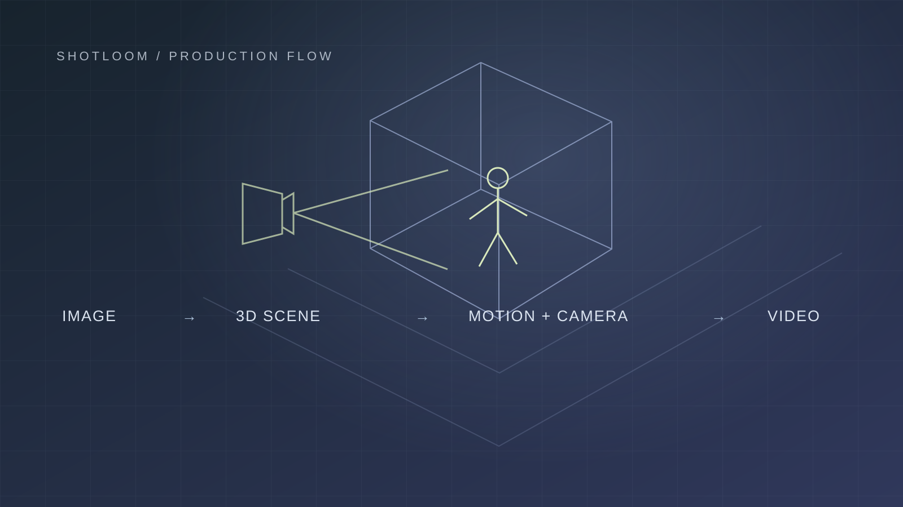

Shotloom production flow concept diagram
Shotloom
A web 3D editor connecting AI video production workflows
Cinamon · 2026.04 - 2026.08 · React / TypeScript · Rust / Bevy
Project overview
Shotloom creates scenes and characters from images, applies prompt-generated motion, and lets directors edit cameras and timing before generating video. I owned character-motion retargeting and the editor frontend, including UX and UI.
| Area | Details |
|---|---|
| My role | Retargeter · Frontend · UX/UI |
| Intended users | Directors unfamiliar with 3D tools |
| Stage reached | Core flow implemented · Dev deployment |
The complete production happy path was implemented and deployed to a development server. Company circumstances stopped development before release. Basic editing refinements and validation with the intended directors remained unfinished.
The production flow
| Step | Production flow |
|---|---|
| 01 | Image input |
| 02 | 3D scene & character |
| 03 | Generate & apply motion |
| 04 | Edit camera & timing |
| 05 | Generate video |
I integrated Proxy Scene, Proxy Character, Text to Pose, Text to Motion, and SceneGen into the editing workflow. The composed scene connected with LLMs and video generators such as Seedance and MiniMax. Generative models and backend services belonged to other members of the team.
Choosing a common basis for retargeting
Characters and motions arrived with different skeletons, coordinate systems, and rest poses. Requiring users to choose and configure source and target rigs would add complexity. I chose ARP and an A-pose as the common basis because they were widely used in the company’s motion assets.
| Input | Adapter | Conversion |
|---|---|---|
| Character sources | Character adapter | Skeleton & rest-pose conversion |
| Motion sources | Motion adapter | Skeleton & rest-pose conversion |
Common basis → Retarget → Apply to character
Separate character and motion adapters allow each side to support new sources independently. For example, adding a Mixamo character would require a character adapter, while adding Mixamo motion would require a motion adapter. This illustrates the extension design.
Fix: twisted legs, wrists, and feet
Applying Unreal MetaHuman-based motion converted through Blender to VRM Humanoid characters produced twisting. I changed the alignment to preserve the target’s rest rotation while aligning the required bone directions, using direction alignment, rest preservation, and finger curl handling for different bone groups.
For the tested character-motion combinations, the inward-wrapping leg deformation and wrist and foot twisting were resolved. Regression checks covered three VRM characters, including VRM 0.x and 1.0.
Motion placement and timing before keyframes
I treated camera and timing as the first decisions a director needs to make. The editor foregrounded company presets and target-based camera presets for composing a scene. I tried video editors, 3D tools, and generative tools myself and discussed references and workflows with editor and designer acquaintances.
| Aspect | Initial approach | Implemented direction |
|---|---|---|
| Motion editing | Edit individual keyframes | Place generated and imported motion as strips |
| User controls | Expose many keyframes | Placement, duration, source range, and speed |
I began with keyframe-based editing, then found through use that imported animations were often edited as whole segments. I shifted toward strips, drawing on clip manipulation in After Effects and iMovie, while referencing Figma for keyframe selection and editing.
Priorities for the remaining development time
In the final week, I prioritized start/end placement, duration, source-range selection, and speed changes. A three-frame constraint in motion bridging received a temporary snapping interaction. Multi-strip and multi-keyframe editing and camera multi-selection remained areas for further work.
Making implementation understandable for the next developer
I implemented the core IK control layer, and a colleague continued with the user-facing manipulation UI. I documented implementation purpose, inputs and outputs, ownership boundaries, and validation so the next developer could understand what to build on.
| My implementation | Colleague’s continuation |
|---|---|
| IK core · Ownership boundaries · Validation | User manipulation UI |
I built and used Knitten and a Shotloom-specific development workflow to connect task, review, and validation records with GitHub changes. I was the direct user of the tooling; colleagues benefited from the code and records that explained the implementation and how to continue it.